Veja algumas delas e suas propriedades :
1.1 - Frutas
Cereja
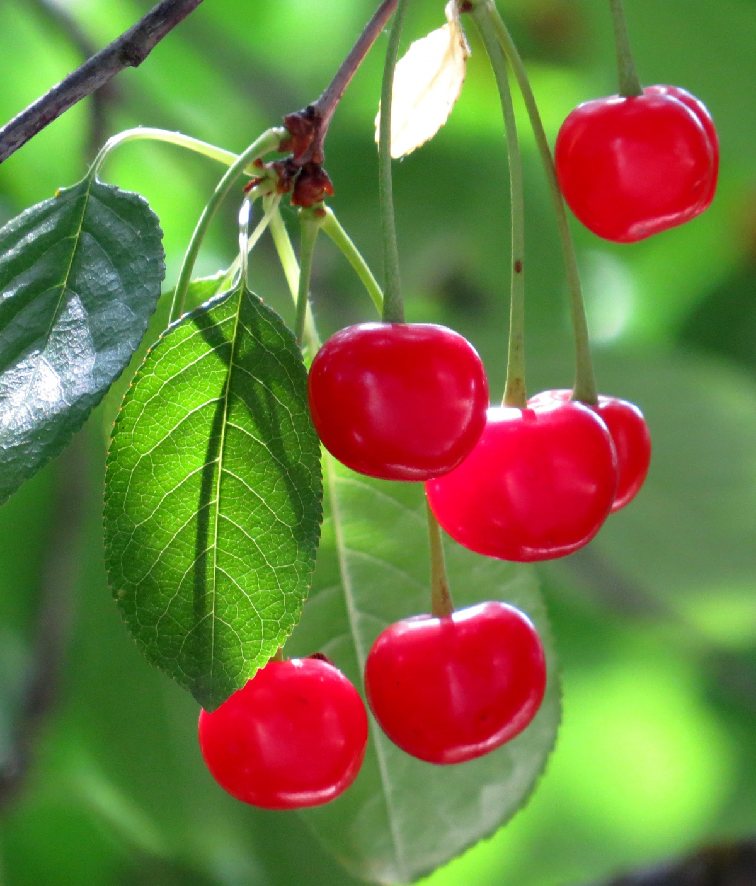
Uma cereja é o fruto de muitas plantas do gênero Prunus. As cerejas do comércio geralmente são obtidas de cultivos de um número limitado de espécies, como a cerejeira-brava (Prunus avium) e a cereja-ácida (Prunus cerasus, ou Ginja).
A Ginja, de polpa bem mais firme, é usada na fabricação de conservas, compotas e bebidas licorosas, como o kirsch, ginjinha e o marasquino. As cerejas contém proteínas, cálcio, ferro e vitaminas A, B, e C. Quando consumida ao natural, tem propriedades refrescantes, diuréticas e laxativas. A cereja tem altas concentrações de antocianina, e é considerada um anti-inflamatório natural, prevenindo inflamações e acalmando dores no corpo.
As sementes encontradas no interior da fruta têm propriedades vermífugas e diuréticas
Uva
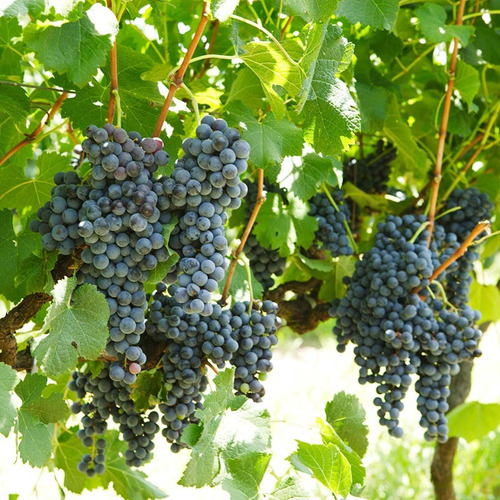
A uva é uma fruta redonda, com cores e tipos variáveis, sendo a roxa e verde as mais consumidas pelos brasileiros. Nascida da videira, o fruto faz parte da família das Vitaceae, e pode ser consumida de diferentes maneiras, como em sucos, geléias, doces, vinhos, passas e entre outras.
A fruta é rica em vitamina A, B, C e K, além de minerais como cálcio, fósforo, ferro, potássio e zinco. Sendo um alimento com uma grande quantidade de fibras que possuem um alto teor nutritivo e isento de colesterol.
Além disso, a uva também possui propriedades antioxidantes, principalmente em sua casca, sementes e folhas, que podem proporcionar diversos benefícios à saúde, como a prevenção do câncer e envelhecimento precoce, o bom funcionamento do intestino e a redução do cansaço muscular.
Acerola
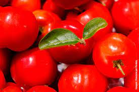
Originária das Antilhas, América Central e norte da América do Sul, a acerola é uma frutinha pequena de cor vermelha e formato arredondado, com sabor ácido e levemente adocicado, e é considerada uma das campeãs em vitamina C do reino vegetal, trazendo cerca de 1 790 miligramas de vitamina para cada 100 gramas de polpa. Também conhecida como ácido ascórbico, a vitamina C melhora o sistema imunológico, a pele, o humor, evita problemas oftalmológicos e derrames, conta com forte ação antioxidante, o que ajuda a combater os radicais livres, responsáveis pelo envelhecimento precoce.
Jabuticaba
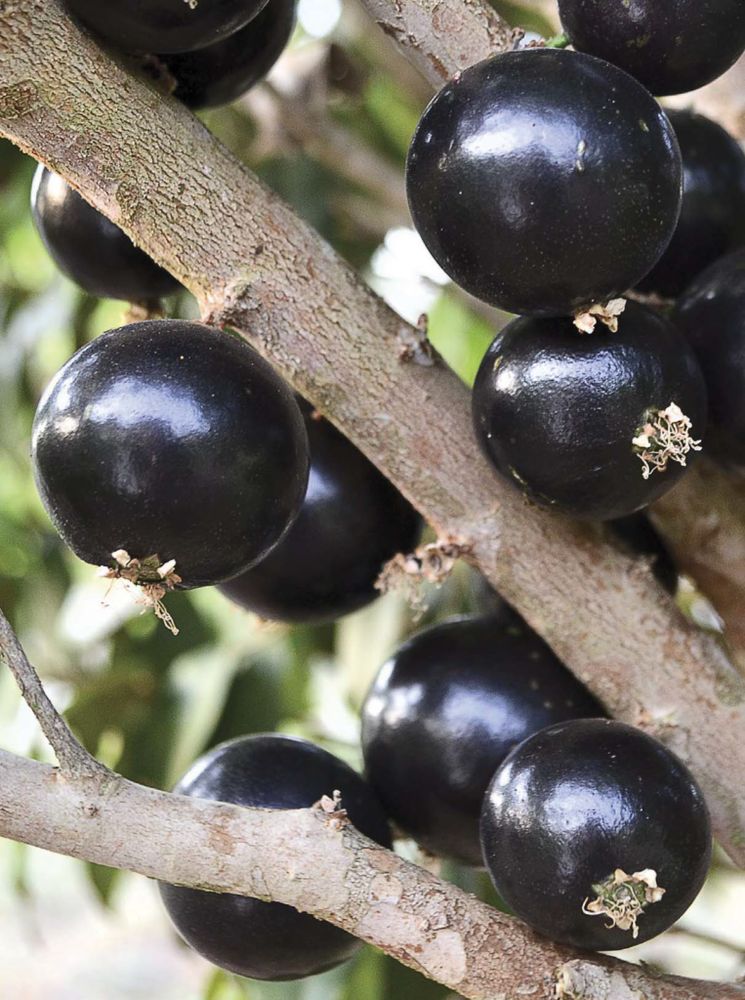
A jabuticaba é o fruto da jabuticabeira, árvore originária do Brasil, nativa da Mata Atlântica. A jabuticabeira floresce de setembro a dezembro a partir do sexto ano de plantio. Chega a medir 5 m de diâmetro. Existem jabuticabeiras por todo o país, porém é mais encontrada nos estados de Minas Gerais, Espírito Santo, Rio de Janeiro, São Paulo e Paraná.
A fruta é pequena, de casca roxa e polpa branca que contém boa quantidade de ferro, vitamina C, carboidratos. Contém também vitaminas do complexo B, como a B2 e B3. É consumida ao natural e utilizada na preparação de vinhos, licores, geléias, sucos, vinagres.
Melancia
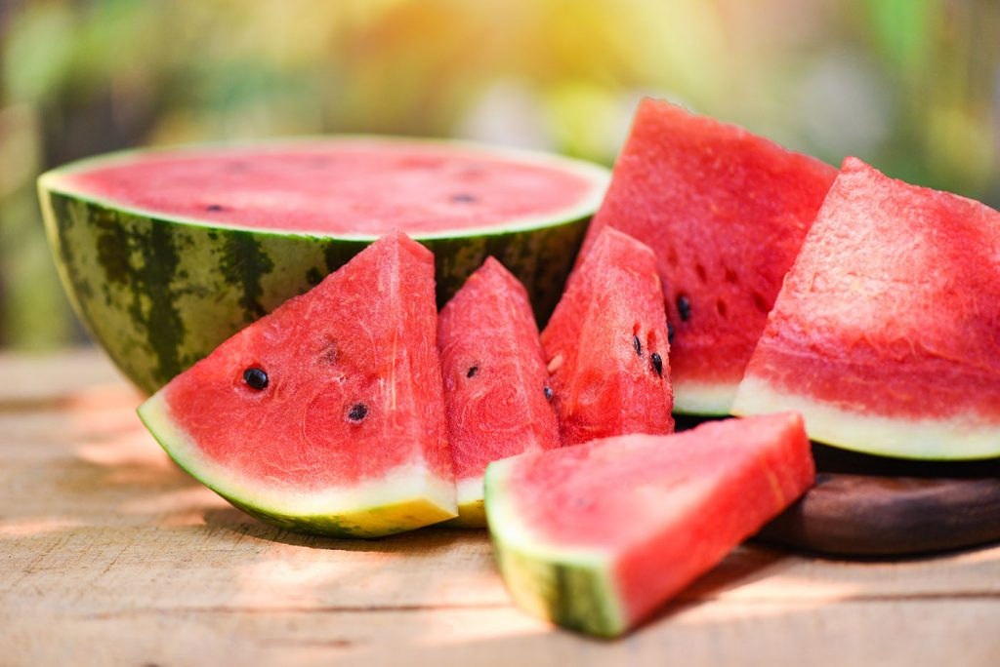
A melancia é uma fruta rasteira que possui licopeno, substância que auxilia na prevenção de alguns tipos de câncer, doenças do coração e envelhecimento precoce.
A melancia é uma fruta rasteira, originária da África. Pertence a mesma família do pepino, da abóbora e do melão.
O fruto é arredondado ou alongado, de polpa vermelha, doce, com alto de teor de água. A casca é verde e lustrosa, com estrias verde-escuro no sentido do comprimento. Além do alto teor de água, a fruta contém açúcar, vitaminas do complexo B e sais minerais, como cálcio, fósforo e ferro.
Mirtilo
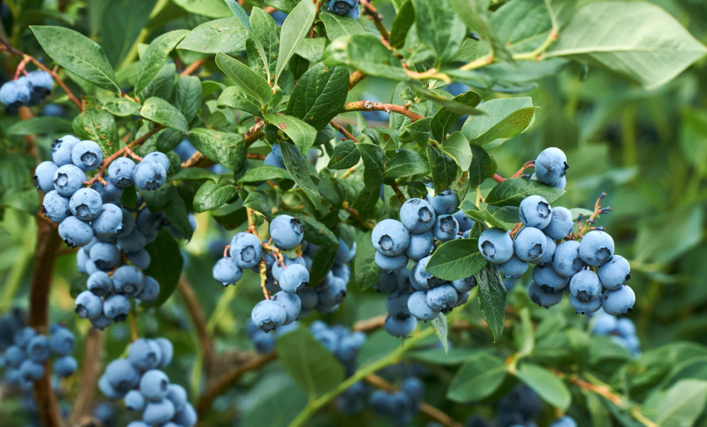
O mirtilo (Vaccinium myrtillus) destaca-se por ser uma fruta "azul", que é conhecida também como blueberry (termo em inglês). O alimento foi introduzido no Brasil apenas na década de 1980, quando começou a ser cultivado na região sul do país. Ele é consumido e produzido em larga escala nos Estados Unidos e na Europa. Os diversos benefícios da fruta ocorrem devido ao poder antioxidante dos compostos ativos como o tanino, os ácidos fenólicos e a antocianina, que dá o pigmento azul da casca. Apesar de pequeno, o mirtilo está entre os alimentos que possuem mais antioxidantes. Além disso, é rico em vitaminas e minerais, o que favorece a prevenção de muitas doenças.
Ameixa
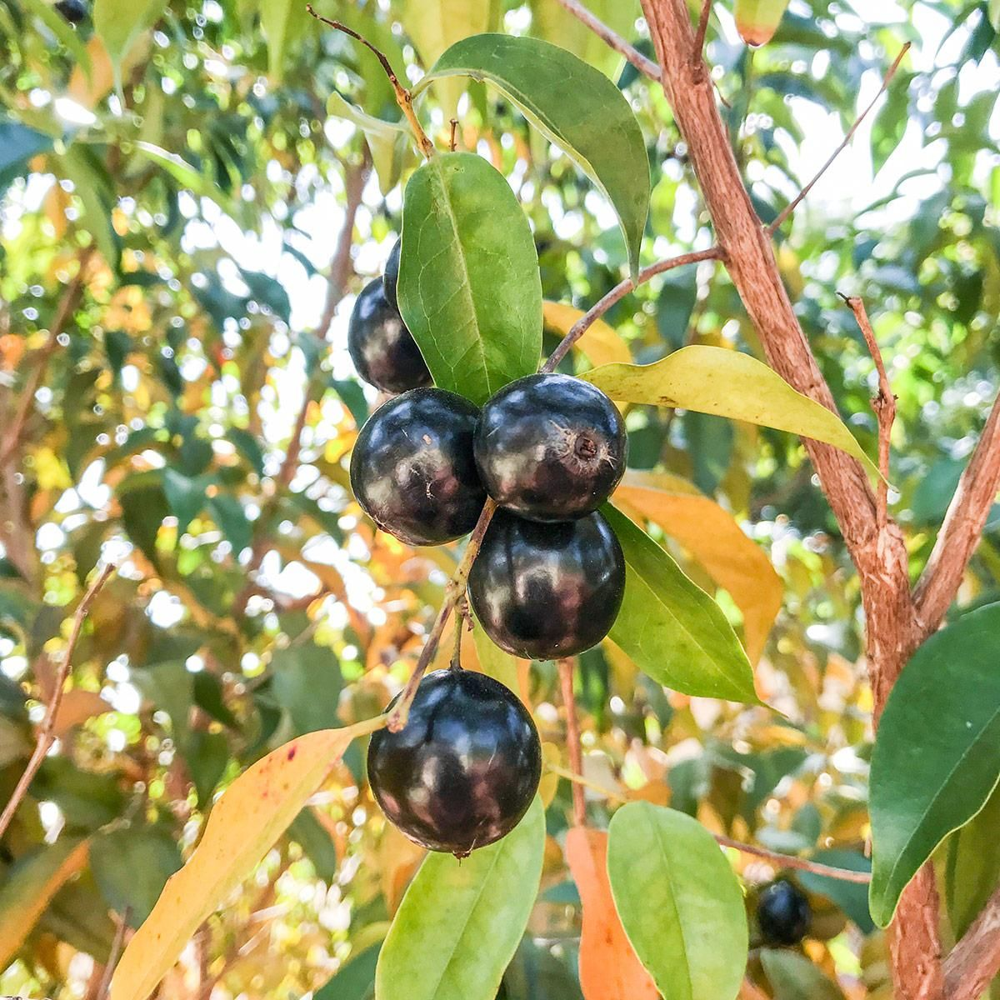
A ameixa é comumente conhecida como uma fruta que regula o intestino e que por isso combate a constipação. Essa fama tem justificativa científica: excelente fonte de fibras que, quando chegam ao intestino grosso, exercem efeito mecânico, absorvendo água e formando o bolo fecal, e eliminando-o mais facilmente. Dessa forma a sua ação laxativa ajuda a combater a prisão de ventre. Mas ela tem muitos outros benefícios. Estudos mostram que a ameixa é fonte de carboidratos, composto bioativos, e dos minerais cálcio, potássio, boro e magnésio, que além de equilibrar a função intestinal, ajuda na prevenção de doenças cardiovasculares, melhora a densidade óssea e tem alto poder antioxidantes.
Açaí
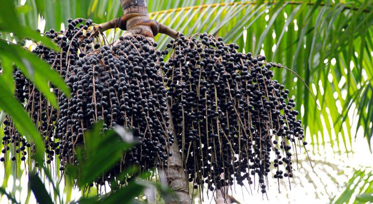
A fruta do açaí cresce no açaizeiro, uma palmeira de nome científico Euterpe oleracea, natural da América Central e do Sul. Sendo nativo da região norte brasileira, na área amazônica, ele ocorre principalmente na Venezuela, Colômbia, Equador, Guianas e Brasil (nos estados do Amazonas, Amapá, Pará, Maranhão, Rondônia, Acre e Tocantins).
Os estados do Pará, Amazonas e Maranhão produzem 85% do açaí mundial, que começou a ser introduzido no mercado nacional em 1980, mas já era um importante alimento para os nortistas do Brasil há muito tempo.
A fruta do açaí contém aminoácidos essenciais, ácido oléico, ácidos graxos ômega 3, magnésio, potássio, fósforo, manganês, ferro, cálcio, cobre, zinco e vitaminas A, B1, B2, B3 e C. Além disso, a fruta é muito rica em antioxidantes, que ajudam a combater a fadiga mental e a melhorar a memória.
A grande quantidade de antioxidantes presentes no açaí ainda ajuda a eliminar os radicais livres, que são compostos que causam danos às células e envelhecimento precoce.
A fruta também é rica em antocianinas - pigmentos responsáveis pelas cores azul, violeta e vermelha da maioria das frutas -, que ajudam a combater o desenvolvimento de vários tipos de tumores, como os de cólon, de mama, de fígado e outros. Além de proteger as células do sistema nervoso contra a degeneração, ajudando a prevenir doenças como o mal de Alzheimer, e a reduzir os níveis de colesterol ruim.
Framboesa
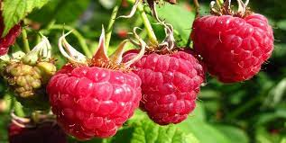
A framboesa é o pseudofruto da espécie de planta Rubus idaeus L., seu sabor é adocicado e por isso, é muito utilizado para fazer doces, licores, sorvetes, balas, xaropes, sucos e geleias.Originária do centro e norte da Europa e de parte da Ásia, para ter uma produção satisfatória, a framboesa precisa estar submetida a 700 horas por ano a uma temperatura inferior a 7ºC.
Sendo baixa em calorias e rica em fibras, vitaminas, minerais e antioxidantes, a framboesa apresenta muitos benefícios, como ajudar a emagrecer e prevenir o câncer e o diabetes.
Romã
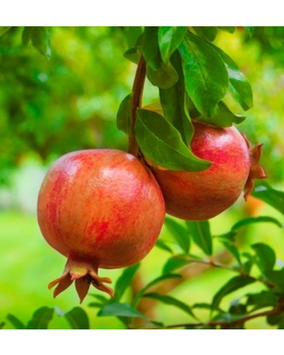
A romã é uma fruta que contém compostos funcionais como flavonoides, quercetina e ácido elágico, que são antioxidantes que podem ajudar a prevenir o Alzheimer e alguns tipos de câncer, e a controlar a pressão alta, além de ter efeito anti-inflamatório e antisséptico, ajudando a aliviar a dor de garganta, por exemplo.
Além disso, a romã pode ser também incluída em dietas para emagrecer, já que tem poucas calorias e é rica em fibras, aumentando a sensação de saciedade e, assim, o consumo de alimentos.
A romã é uma fruta levemente doce e as sementes podem ser consumidas in natura ou utilizadas para fazer sucos, saladas e iogurtes. Já as cascas, folhas e caule da fruta podem ser usadas para fazer chás. Como suplemento alimentar, é comum a indústria usar o extrato desidratado da casca e também o óleo concentrado das sementes da romã para prevenir o envelhecimento precoce e melhorar o sistema imunológico.
Groselha
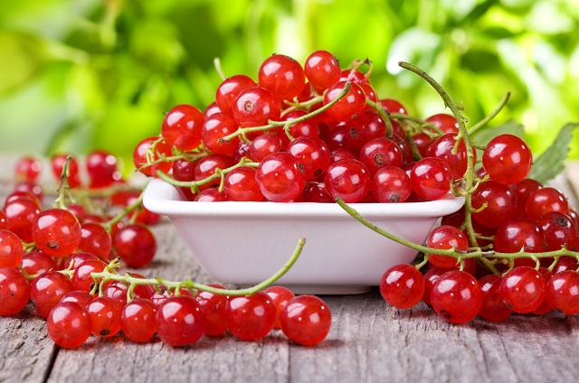
A groselha faz parte do grupo das frutas vermelhas. Assim sendo, ela é muito rica em vitamina C, potássio, caroteno, ferro, fósforo e magnésio. Além do mais, ela ainda possui ação antioxidante. Geralmente, ela pode ser encontrada em lojas de produtos orgânicos, ou feiras de bairro. Da mesma forma, alguns mercados podem mantê-la na prateleira de frutos especiais. Há sites na web, especializados em comércio alimentício, que também podem oferecer a fruta.
Para consumir a fruta e aproveitar o máximo de suas propriedades, o ideal é que se faça o processo in natura. No entanto, existem possibilidades de converter a groselha em refrescos, picolés e sorvetes, refrigerantes, geleias, doces e muito mais. As ações dela no corpo são perfeitas para cuidar dos cabelos e da pele, além de conter mais vitamina C do que a própria laranja.
Maçã
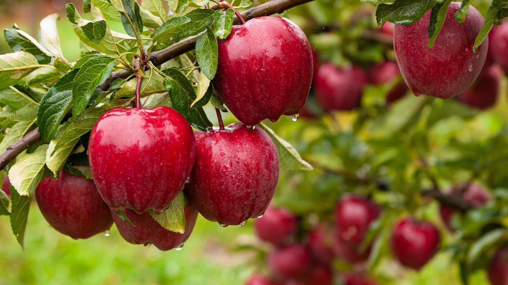
A maçã é uma fruta com ótimas quantidades de carotenoides e flavonoides, compostos bioativos com propriedades antioxidantes, que ajudam a prevenir algumas doenças, como diabetes, câncer, doenças cardiovasculares e Alzheimer.
Além disso, a maçã é rica em fibras e tem baixo índice glicêmico, contribuindo para prolongar a saciedade e diminuir a vontade de comer ao longo do dia, promovendo o emagrecimento.